제1 장 연구배경 및 연구목적
1.1 연구배경
공공연구성과의 직접 사업화를 위해 만들어진 연구소기업은 2006년 제1호 콜마비앤에이치㈜를 시작으로 누적 설립 1,569호를 돌파하였으며(2022년 12월 기준) 2021년 기준 총 매출액 11,268억원, 총 고용인원 6,007명 등 경제적인 성과를 창출하고 있다. 연구소기업 제도가 제정된 후 총 5개사(콜마비앤에이치, 수젠텍, 신테카바이오, 진시스템, 마인즈랩)가 상장하였는데 상장 이후에도 지속적인 성장세를 보인 것은 콜마비앤에이치 뿐이며, 다른 기업들은 성장세가 정체되어 있다.
1.2 연구목적
본 사례연구 대상인 1호 연구소기업 콜마비앤에이치㈜는 연구소기업 최초로 코스닥에 상장(2015년) 했을 뿐만 아니라 상장 이후에도 연평균 20% 이상의 매출액 성장률을 기록하며 대상시장을 해외까지 확장해 나가고 있다. 콜마비앤에이치의 성공과 관련하여 기존 문헌을 조사한 결과 최종인(2012)은 성공요인을 연구자의 능력과 열정, 파트너 기업의 경험, 연구소의 효과적 정책지원으로 보았고, 함형욱(2015)은 기술요인(연구소의 고품질 지식재산), 시장요인(기능성식품, 화장품), 사업주체역량요인(마케팅, 유통)으로 분석하였으며, 이종환(2019)은 자원기반적 요인(내부적인 핵심자원 확보)과 네트워킹(파트너 기업 활용)을 주요 성공요인으로 도출하였다. 그러나 콜마비앤에이치가 초기 헤모힘 기술사업화에 성공 후 어떤 과정을 거쳐 제품과 고객 채널을 다변화해가며 성장했고, 최근 셀티브코리아㈜를 설립하여 유통과 브랜딩까지 직접 시도하고 있는지를 설명하고 있는 연구는 없었으므로 본 사례연구를 통해 알아보고자 한다. 이번 사례연구를 통해 알아보고자 하는 Research Question은 다음과 같다. [RQ1] 연구소기업 콜마비앤에이치는 어떻게 출자기술 사업화에 성공하여 최종적으로 시장진입에 성공할 수 있었을까? [RQ2] 콜마비앤에이치는 초기 출자기술 사업화 성공 후 어떤 전략으로 다른 시장에 진출할 수 있었을까? 상기 두가지 Research Question에 대한 답을 찾아가는 관점에서 이번 사례연구를 진행하였다.
제2장 이론적 배경
2.1 연구소기업
연구소기업은 공공기술의 직접사업화를 촉진시키기 위해 만들어진 제도로 연구개발특구 내 설립, 설립기관 지분 보유 등 일정 요건을 충족할 경우 『연구개발특구육성에 관한 특별법』 제9조에 의하여 과학기술정보통신부 장관의 승인을 받아 등록하게 되며, 연구기관의 기술력과 민간의 자본 및 경영을 결합하여 R&D-사업화-재투자의 선순환 생태계를 조성하는데 그 목적이 있다. 여기서 연구개발특구란 1973년 조성된 대덕연구단지를 전신으로 하여 이후 2005년 관련 법 제정에 따라 연구개발을 통한 신기술의 창출 및 연구개발 성과의 확산과 사업화 촉진을 위하여 조성된 지역을 말한다. 현재 대덕 외에도 광주, 대구, 부산, 전북 등 4개의 추가 광역특구와 14개의 소규모 강소특구가 지정되어 있는 상태이다. 그림1. 연구소기업 제도의 목적(출처 : 연구소기업 설립 가이드북(2019)) 연구소기업의 설립 요건은 다음과 같이 크게 세가지로 나눌 수 있다. 첫번째는 기술이전 혹은 출자를 통한 공공기술의 직접 사업화 목적으로 설립되어야 하며, 두번째로 특구법 제2조 및 시행령 13조에 해당하는 설립주체(공공연구기관, 산학협력기술지주, 신기술창업전문회사 등)가 해당 기업의 지분을 10% 이상 보유하여야 하며, 마지막으로 본사 소재지가 연구개발특구 내 위치하여야 한다. 연구소기업은 설립 유형에 따라 크게 합작투자형, 기존기업전환형, 신규창업형 3가지로 분류된다. 먼저 합작투자형은 연구기관과 기존기업이 기술과 현금 등을 공동출자하여 조인트벤처를 설립하는 형태이며, 기존기업전환형은 기존기업에 기술 등을 출자하여 기존기업을 연구소기업으로 전환하는 형태이다. 마지막으로 신규창업형은 연구기관과 신규창업자가 기술과 현금 등을 공동 출자하여 새로운 기업을 설립하는 형태이다. 이를 도식화하여 나타내면 아래 그림과 같으며, 연구소기업은 공공연구기관의 기술을 가지고 사업을 시작하므로 강력한 기술원천을 가지고 있다고 할 수 있다. 그림2. 연구소기업의 설립 유형(출처 : 연구소기업 설립 가이드북(2019)) 일반적으로 연구소기업은 다음과 같은 과정으로 설립이 이루어진다. 먼저 사전 준비 단계에서는 공공기술과 수요자가 만나 사업화 대상 기술 및 사업화 주체를 정하게 되고, 이후 기술출자 또는 이전과 지분출자, 법원등기 등의 과정을 거쳐 최종적으로 법인이 만들어진다. 요건을 다 갖춘 기업은 연구소기업 관리주체인 연구개발특구진흥재단에 등록신청을 하게 되고, 이후 최종적으로 과학기술정보통신부 장관의 승인을 거쳐 연구소기업이 탄생한다. 과학기술정보통신부 및 연구개발특구진흥재단은 연구소기업의 활성화를 위하여 발굴·기획부터 출자를 위한 기술가치평가, 등록 이후에는 시장진출을 위한 사업화 과제 등을 지원하고 있다.
그림1. 연구소기업 제도의 목적(출처 : 연구소기업 설립 가이드북(2019))
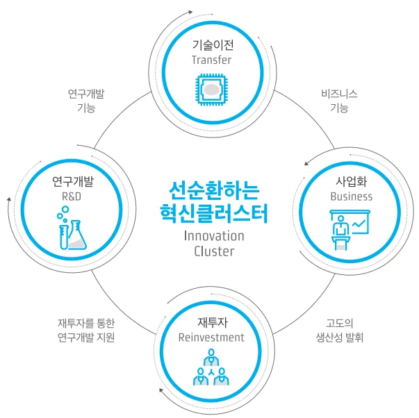
그림2. 연구소기업의 설립 유형(출처 : 연구소기업 설립 가이드북(2019))
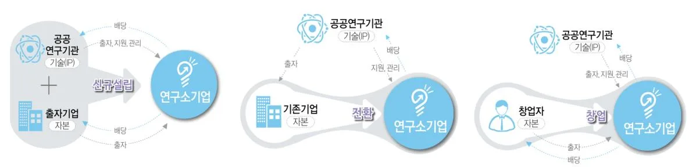
2.2 거점시장(Beachhead Market)과 인접시장(Adjacent Market)
Bill Aulet(2013)의 저서 ‘Disciplined Entrepreneurship’에서 소개하고 있는 24단계 프레임워크에 따르면 창업기업이 시장 세그먼트, 즉 어떤 시장에서 사업을 할 것인지 결정하는 것은 굉장히 중요한 일이라고 할 수 있다. 그 중에서 거점시장(Beachhead Market)은 비교적 소규모이지만 고도로 표적화된 시장 세그먼트를 의미하는데, 이 거점시장은 기업의 제품이나 서비스가 초기에 진입해 시장 점유율을 높이고 이후에는 그 기반위에서 더 큰 시장으로 확장해 나갈 수 있는 기회를 제공한다고 설명하고 있다. 비록 거점시장은 소규모일 수 있지만 현명하게 선택하고 활용한다면 창업 기업에게 더 큰 도약을 가능하게 하는 발판이 될 수 있다. 거점시장으로 진입하기 위한 전략은 다음과 같다. 1. 시장 이해와 세분화: 세그먼트화된 시장의 동향, 고객의 필요와 행동, 그리고 경쟁 상황을 철저히 이해하는 것이 필수적임 2. 가치 제안 개발: 고객의 실제 필요를 충족시킬 수 있는 독특하고 강력한 가치 제안을 개발해야 함 3. 단일 메시지 전달: 시장의 주목을 끄는 데는 명확하고 일관된 메시지가 매우 중요함 4. 효과적인 제품/서비스 배포: 제품/서비스가 고객에게 도달하도록 효과적인 채널과 파트너를 확보해야 함 또한 빌 올렛은 거점시장에서의 성공을 기반으로 인접 시장으로 확장하는 과정을 권장하며 이와 관련하여 다음과 같이 설명하고 있다. 1. 비치헤드 마켓에서의 성공 기반 확장: 비치헤드 마켓에서의 성공을 토대로 시장을 확장해 나가야 하며, 이는 제품/서비스, 브랜드 인지도, 그리고 고객 기반 등 요소에 기반함 2. 시장 이해 강화: 확장하고자 하는 인접 시장의 동향, 고객의 필요와 행동, 그리고 경쟁 상황을 깊게 이해해야 함 3. 가치 제안 재조정: 인접 시장의 고객이 가진 독특한 요구사항을 충족시키기 위해 가치 제안의 재조정이 필요함 4. 적응형 배포 전략: 인접 시장의 고객에게 제품/서비스를 효과적으로 전달하기 위해 배포 전략을 재조정해야 함 이 과정에서 제품의 라이프사이클을 이해하고, 고객의 요구에 따라 제품을 발전시켜야 하며, 고객의 요구와 시장의 동향에 따라 제품 기능, 가격, 마케팅 전략 등을 다르게 수립하는 것이 중요하다.
2.3 핵심역량(Core Competency)
Gary Hamel과 C.K. Prahalad(1990)이 제안한 이론으로, 이들은 핵삼역량을 기업이 경쟁 우위를 확보하기 위해 반드시 개발하고 유지해야 하는 핵심적인 능력이나 기술로 정의하였다. 핵심역량 이론에 따르면, 기업의 핵심역량은 다음과 같은 특징을 가지고 있어야 한다. - 고객 가치 창출: 핵심역량은 고객에게 가치를 제공하며, 이로 인해 고객은 해당 기업의 제품이나 서비스를 구매하게 됨 - 경쟁에서 차별화: 핵심역량은 경쟁사들이 쉽게 복제하거나 획득하기 어렵도록 만들어야 하며, 이로써 기업은 시장에서 독특한 위치를 차지할 수 있게 된다. - 다양한 시장에서 활용 가능: 핵심역량은 기업이 다양한 제품 라인이나 시장에 진입하는 데 활용될 수 있어야 하며, 이는 기업의 유연성을 높이고 새로운 기회를 활용할 수 있도록 해준다. Hamel과 Prahalad는 기업이 이러한 핵심역량을 발견하고 개발하는 것이 기업 성장의 핵심이라고 주장하였으며, 또한 그들은 기업이 단순히 현재의 성공에 만족하기보다는 미래의 기회를 포착하고 준비하는 것이 중요하다고 강조하였다.
제 3장 대상 시장 개요
3.1 건강기능식품
건강기능식품은 인체에 유용한 기능성을 가진 원료나 성분을 사용하여 제조한 식품을 말하며 건강기능식품에 관한 법률에 의하여 관리된다. 모든 식품은 첫째, 생명 및 건강 유지와 관련되는 영양기능(1차 기능), 둘째, 맛, 냄새, 색 등의 감각적, 기호적인 기능(2차 기능), 셋째, 건강유지 및 증진에 도움이 되는 생체조절기능(3차 기능)을 가진다고 알려져 있는데, 건강기능식품은 여기서 3차 기능에 초점이 맞추어져 있다고 할 수 있다. 여기서 말하는 3차 기능은 질병의 발생 또는 건강상태의 위험 감소와 관련한 기능, 인체의 정상기능이나 생물학적 활동에 특별한 효과가 있어 건강상의 기여나 향상을 나타내는 기능, 인체의 정상적인 기능이나 생물학적 활동에 대한 영양소의 생리학적 작용 등을 의미한다. 최근 코로나19 사태로 인해 많은 사람들이 셀프 메디케이션 차원에서 면역, 생리활성 등을 높이기 위한 건강기능식품에 관심을 보이고 있으며, 이에 따라 시장규모도 급격하게 성장하고 있다. 건강기능식품은 반드시 동물실험, 인체적용시험 등 기능성과 안정성 평가를 거쳐 식품의약품안전처의 건강기능식품 마크를 획득해야 제조 및 판매가 가능하다. 건강기능식품에 관한 법률은 2003년에 제정되었으며, 그 전까지는 광고에 대한 사전 심의만으로도 기능성 표시가 허용 되었으나 법률이 제정된 후로는 식약처의 엄격한 관리를 받게 되었다. 그림3. 건강기능식품 관리체계 변천사(출처 : 식품의약품안전처) 소비자가 직접 섭취를 하는 제품군이다보니 규제가 엄격한 편이며, 2020년부터는 GMP제도가 전면 시행되면서 건기식을 생산하기 위해서는 반드시 GMP 기준에 맞는 제조시설까지 갖추어야 하는 상황이 되었음에도 불구하고 매년 건강기능식품 관련 업체는 증가하고 있는 상황이다. 건강기능식품 관련 영업의 종류는 크게 제조업과 판매업으로 구분할 수 있다.
그림3. 건강기능식품 관리체계 변천사(출처 : 식품의약품안전처)
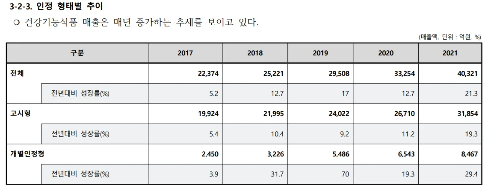
3.2 시장현황
식품의약품안전처에서 발표한 생산실적 통계자료에 따르면 2021년 국내시장규모는 약 5조원으로 집계되었으며, 2022년 시장규모는 아직 확정되어 발표되지 않으나 건강기능식품협회에 따르면 약 6조 1429억원 규모로 추정된다. 코로나19의 영향으로 대중의 관심도가 급격하게 높아졌으며, 최근 3년간 거의 매년 20%에 육박하는 성장률을 보이고 있다. 표1. 국내시장규모(출처 : 2021년 생산실적 통계집, 식약처) 뿐만 아니라 ‘22년 세계시장 규모는 약 230조원 규모로 글로벌 시장은 진출하기에 상당히 매력적이라고 할 수 있다. 국가별 시장 규모는 1위 미국, 2위 중국 순으로 시장이 형성되어 있으며, Market Data Forecast는 2028년까지 연평균 6.7%의 CAGR로 성장할 것이라 전망하였다. 이렇게 고성장하는 시장에는 늘 경쟁이 뒤따라올 수 밖에 없다. 2021년을 기준으로 건강기능식품 제조업체의 수는 539개이며, 17년부터 연평균 2%씩 증가하고 있는 추세이다. 특히 종근당건강, 유유헬스케어, JW생활건강, 일동바이오사이언스 등 제약사 자회사들의 실적이 증가세에 있으며, 기존 건기식 업체들인 노바렉스, 서흥 등도 코로나19 상황에 힘입어 실적이 고공비행하는 중이다. 또한 업체당 평균 매출액은 74.8억원으로 17년부터 연평균 13.5%로 급 성장하였다. 2021년을 기준으로 건강기능식품에서 가장 많이 팔린 품목은 홍삼 관련 제품이었으며, 그 다음은 개별인정형 상품들이 2위, 다음으로 프로바이오틱스, 비타민 및 무기질, EPA 및 DHA 함유 유지 순서로 나타났다. 또 2023년 건강기능식품 소비자 분석 리포트에 따르면 건강기능식품 구매 시 가장 주요한 고려 요인은 기능과 효능인 것으로 나타났으며, 그 다음이 가격요인이었다. 성분이나 원산지 보다는 가격 대비 품질, 즉 가성비가 가장 중요한 경쟁력이 되어야 할 것으로 보인다.
표1. 국내시장규모(출처 : 2021년 생산실적 통계집, 식약처)
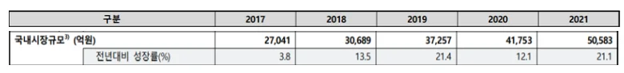
3.3 기능성 원료
건강기능식품으로 인정받기 위한 핵심은 기능성 원료를 포함하는 것인데 이 기능성 원료는 다시 고시형 원료와 개별인정형 원료로 나누어 진다. 먼저 고시형 원료는 식품의약안전처에서 ‘건강기능식품의 기준 및 규격’에 고시한 성분으로써 제조기준, 규격, 최종제품의 요건의 적합할 경우 별도의 인증절차 없이 제품 생산 및 판매가 가능하다. 즉 고시형 원료에는 독점적 권리가 없으며 대표적으로 홍삼, 프로바이오틱스, 밀크씨슬, 비타민 등이 여기에 해당한다. 반면에 개별 인정형 원료는 고시형 원료에 포함되지 않으면서 식품의약품안전처장이 개별적으로 기능을 인정하는 원료로써, 제품 생산 및 판매를 위해서는 원료의 안정성, 기능성, 기준 및 규격의 자료를 심의받아야 하며 이렇게 인정을 받게 될 경우 해당 업체만이 제조와 판매를 할 수 있는 독점적 권리를 갖게 된다. 고시형 원료의 경우 이미 한국인삼공사, 종근당건강, 한국야쿠르트 등이 안정적인 시장 점유율을 확보하고 있어, 각 사에서는 개별인정형 원료 개발에 박차를 가하고 있으며, 최근에는 개별인정형 건강기능식품의 매출 비중도 높아지고 있다. 실제로 2017년 개별인정형 건강기능식품의 비중은 약 11% 수준에 불과하였으나, 2021년에는 약 21%를 차지하는 것을 알 수 있다. 표2. 인정 형태별 매출액 추이(출처 : 2021년 생산실적 통계집, 식약처) 아직까지 개별인정형 원료의 매출규모가 가시적이진 않지만, 원료 단가 및 배합비 등이 공개될 수 밖에 없는 고시형 원료에 비해 개별인정형 원료는 훨씬 높은 마진율을 보이기 때문에 앞으로도 지속적으로 개별인정형 원료의 비중은 높아질 것으로 예상된다. 개별인정형 원료 개발과정은 평균적으로 10억원 정도의 개발비와 약 7년 정도의 개발기간이 소요되는 것으로 알려져 있다.
표2. 인정 형태별 매출액 추이(출처 : 2021년 생산실적 통계집, 식약처)
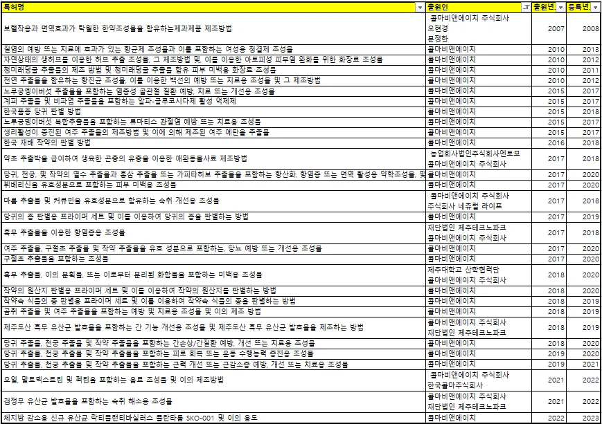
제 4장 대상기업 소개
4.1 주요 연혁
콜마비앤에이치㈜는 2004년 2월에 한국콜마와 한국원자력연구원이 공동으로설립한 합작투자형 연구소기업 ㈜선바이오텍가 모태이다. 한국콜마에서 약 6.2억을, 한국원자력연구원에서 약 3.8억(기술)을 출자하였으며 이후 2006년 제1호 대덕특구 연구소기업으로 지정되었다. 이후 2012년에 한국푸디팜을 흡수합병 하면서 콜마비앤에이치(Kolma Beauty and Health)로 사명을 변경하였고, 2013년에는 원재료의 안정적 수급을 위해 자회사인 근오농림을 설립하였다. 이후 미래에셋제2호스팩합병으로 2015년에 코스닥 상장하였으며 2017년에는 중국법인인 강소콜마도 설립하였다. 동사는 건강기능식품과 화장품 제조 및 판매를 주 사업으로 하고 있으며, 주로 천연물을 이용하여 개발한 소재를 사업화하여 ODM/OEM 방식으로 생산 및 판매하고 있다. 2022년 매출액은 연결 기준으로 5,759억원이며, 15년부터 CAGR 12%의 매출액 성장률을 보이고 있다. 그림4. 연구소기업 콜마비앤에이치의 주요 연혁
그림4. 연구소기업 콜마비앤에이치의 주요 연혁
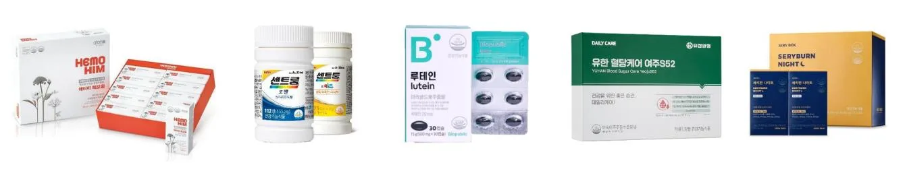
4.2 핵심기술 및 제품
가장 널리 알려진 제품으로는 원자력연구원으로부터 기술을 출자 받은 면역 개선식품 ‘헤모힘’이 있으며 이 외에도 비만 개선, 당뇨 예방 등 건강기능식품과 기능성 화장품 소재 등을 판매하고 있다. 헤모힘은 국내 고유기술로 개발된 생약복합조성물이 건강기능식품으로 인증된 첫 신물질로, 면역기능 개선 효능이 입증되어 식약처로부터 개별인정형 원료로 인정받았다. 이 기술은 원자력연구원에서 조성기 박사 연구팀이 약 8년간 연구 끝에 개발한 결과물로, 당귀, 천궁, 백작약 뿌리를 동일 무게 비율로 혼합하고, 열탕 추출하여 제조하는 방식이다. 콜마비앤에이치는 2004년 기술출자 당시 헤모힘 기술과 고순도 정제기술 두가지에 대하여 3억 7천8백만원의 가치를 인정받았는데 출자 당시 굉장히 기술성 및 사업성을 높게 평가받았다고 할 수 있다. 헤모힘은 현재 콜마비앤에이치 매출의 약 20%를 차지하고 있는 메가히트 상품으로 고가 제품임에도 불구하고 꾸준한 판매량을 기록하고 있다. 소개자료에 따르면 헤모힘은 인체적용시험 결과에서 NK CELL(해로운 세포를 직접 파괴하는 면역세포) 활성화, CYTOKINE(면역체계 신호 전달 단백질) 생성 개선 및 생체방어 능력을 향상시키는 면역세포의 활성화 효과가 확인되었어 면역기능에 도움을 줄 수 있음으로 표기할 수 있게 되었다. 작성시점을 기준으로 콜마비앤에이치가 권리를 보유한 특허는 41건으로 확인되며 직접 출원한 특허는 대부분 추출물, 조성물 등 원료물질 및 제조방법과 관련이 있었다. 특히 헤모힘의 주 원료인 당귀, 천궁, 백작약 관련 후속특허가 다수 있었으며, 2015년 가짜 백수오 사태로 농가에 많은 피해가 갔었기에 제품의 신뢰도를 높이기 위해 재배작물의 종과 원산지를 판별하는 특허도 4건을 출원하여 모두 등록하였다. 콜마비앤에이치는 이러한 원료 파이프라인과 제형 개발, 생산 능력을 바탕으로 애터미, 유한양행, 이마트, 종근당 등 국내외 300여개의 기업에 B2B 방식으로 영업을 이어나가고 있으며, 대표적으로는 면역력 강화 제품으로 알려진 ‘헤모힘’이 있다. 이 외에도 유산균, 오메가3, 루테인, 비타민 등 다양한 건강기능식품을 생산하고 있으며 국내에서 음성 1,2,3공장, 세종 1,2공장을 통해 연간 약 5천억의 생산능력을 보유하고 있는 상황이다. 또한 코로나19 이후 증가하고 있는 주문량에 대응하기 위해 세종에 3공장을 건설 중에 있으며 ‘23년 9월 완공 예정이다. 그림5. 콜마비앤에이치의 주요 제품(출처 : IR 리포트)
표3. 콜마비앤에이치 특허 현황(출처 : 키프리스 검색결과 기반 작성)
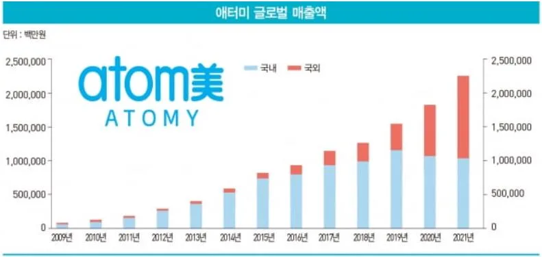
그림5. 콜마비앤에이치의 주요 제품(출처 : IR 리포트)
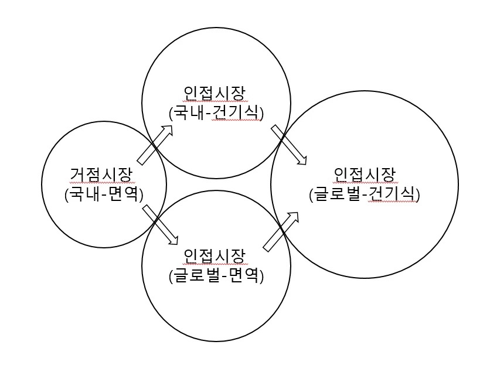
제 5장 혁신사례 분석
5.1 초기 시장진입 전략
콜마비앤에이치는 처음부터 헤모힘 기술을 사업화 할 목적으로 설립되었기 때문에 당연히 첫번째 과업으로 헤모힘으로 생산 가능한 제품 출시에 도전했다. 헤모힘 기술이 처음 연구개발 기획되었을 때는 방사선 및 항암제 치료의 부작용을 방지하고 면역세포의 회복 증진과 조혈 기능 활성화 등을 보조하는 것을 목적으로 하였다. 헤모힘 기술은 원자력연구원의 조성기 박사팀이 1997년부터 약 8년간 연구를 진행하였는데, 연구 진행과정에서 방사선 및 항암제 치료 시의 장해 극복 뿐만 아니라 노약자 혹은 면역기능이 약한 사람의 회복 촉진에도 효과가 있다는 것을 밝혀내게 되었다. 그래서 헤모힘을 액상 다류식품 형태의 건강기능식품으로 제품화하여 사업화를 시도하였다. 당시 모기업의 연구소장이었던 김치봉 소장을 대표로 후속 사업화 연구를 진행하였으나, 기대와는 달리 건강기능식품에 관한 법률의 시행으로 독성 시험 및 인체적용시험 등 조건이 까다로워져서 2006년에야 식약처로부터 건강기능식품으로 인정을 받을 수 있었다. 2004년에 1차 건강기능식품 원료 인정 신청을 하였으나 원료 함량과, 표준화 문제로 거절되었고 이때부터 원자력연구원과 함께 효용성 확대 및 제품화 연구 국책과제를 함께 진행하였다. 2005년 2차 인정 신청에서는 준건강인 대상 자료를 추가로 요청 받았으며, 이 때 원자력연구원과 함께 진행한 과제에서 염증 반응, 알러지 반응 등 동물 효능 검증에 관한 노하우와 준건강인을 대상으로 하는 임상효능의 설계 노하우를 얻게 되었다. 그리고 2006년 3월에 최종적으로 원료 인정을 신청하였으며 8월에 식약처로부터 인정을 취득하게 된다. 그 전에는 다류상품으로만 판매하던 헤모힘이 1호 면역기능개선 효능을 인정받게 되자 2007년에는 매출액에 4배 가까이 상승하기도 하였다. 그러나 모든 신생 기업이 그러하듯 이후에는 매출 성장이 미미 하였는데 2009년 마케팅 파트너로 애터미를 만나게 되면서 매출액이 급성장하게 된다. 애터미는 2009년 설립된 다단계 유통사로 설립 초기에는 콜마비앤에이치의 제품 위주로 라인업을 구성하였으나 지금은 콜마비앤에이치의 매출액을 훨씬 뛰어넘는 기업으로 성장하였으며 제품도 건강기능식품 뿐만 아니라 생활용품 등 다양한 라인업을 구사하고 있다. 애터미는 초반에 다단계에 대한 부정적인 이미지로 회원을 모집하는데 어려움을 겪었으나, 회원들의 신뢰도를 높이기 위해 헤모힘이 생산되는 콜마비앤에이치의 공장을 직접 견학하고, 콜마비앤에이치의 사옥에서 원데이 세미나를 개최하는 등 기업의 기술과 생산능력을 지속적으로 강조함으로써 점차 회원수를 늘리게 되었다. 현재도 직원들에게 지속적으로 혁신을 강조하며 4차 산업혁명 시대에 맞추어 AI, 로봇 등을 적극 활용하는 기업 문화를 만듦으로써 두자리대 성장률을 기록하고 있다. 그림6. 애터미의 매출액 추이(출처: 매거진 한경) 초기 헤모힘 제품은 높은 생산단가로 인해 처음 출시되었을 때는 60포에 77만원이라는 소비자 접근성이 아주 낮은 가격대를 형성하였다. 그러나 애터미를 통해서 지속적인 수요가 발생하게 되자 생산 설비 가동률을 끌어올리고 원료 탱크 사이즈를 키우면서 규모의 경제를 이룩하게 되었다. 특히 원료 추출 및 농축 탱크, 파우치 충진, 살균 공정 및 건조/포장까지 자동화 라인을 구축하면서 30포에 14만 8천원으로 판매단가를 낮출 수 있었으며, 안정적인 매출처가 있어 판관비도 적게 들기 때문에 이는 다시 콜마비앤에이치의 높은 영업이익으로 이어져 추가 생산설비에 투자하거나 해외의 원료를 구입해오는 성장의 밑거름이 되었다. 이후 제품가격은 1세트의 7만 6500원으로 거의 10분의 1 수준까지 가격을 낮추어 대표적인 면역기능 강화 상품인 홍삼제품과도 경쟁할 수 있게 되었다. 즉, 콜마비앤에이치는 건강기능식품 시장 중에서도 면역력 개선 분야라는 세그먼트된 거점시장을 잘 설정하고, 시장에 일관된 메시지(저가격/고품질)를 전달하였으며, 애터미라는 효과적인 채널과 파트너를 확보함으로써 거점시장에 안착한 것으로 정리할 수 있다.
그림6. 애터미의 매출액 추이(출처: 매거진 한경)
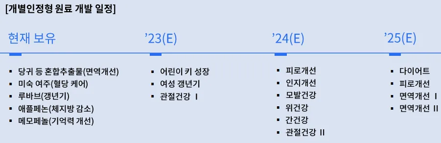
그림7. 매출액, 영업이익 추이(사업보고서 기반 본인 작성)
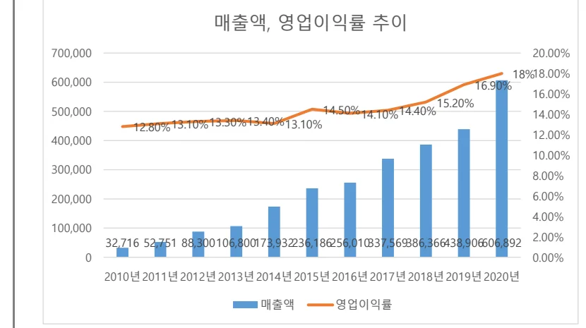
5.2 인접시장(Adjacent Market)으로의 확장 전략
콜마비앤에이치는 먼저 기존고객에게 추가적인 제품을 파는 Upselling 또는 유사한 성격을 가진 인접시장으로의 확장을 고민해야 했는데, 현재 주요 고객인 면역개선이 필요한 환자들보단 더 폭넓은 국내외 건강기능식품 시장으로의 진출을 결정하였다. 먼저 인접시장을 아래 그림과 같이 식별하여 단계 별 진출전략을 구상하였으며, 각 인접시장의 잠재력과 우선순위를 고민하여 글로벌 면역시장을 먼저 타겟으로 하고, 이후 국내 건강기능식품 시장, 그리고 최종적으로는 글로벌 건강기능식품 시장으로의 진출을 계획하였다. 그림8. 콜마비앤에이치의 확장전략 모델 빌 올렛의 24 framework에서는 인접 시장의 우선순위를 정한 후 각 시장에 진입하기 위한 전략을 개발하여 실행할 것을 권장하고 있으며, 콜마비앤에이치는 단계별로 다음에 서술할 내용과 같이 확장전략을 실행하였다.
그림8. 콜마비앤에이치의 확장전략 모델
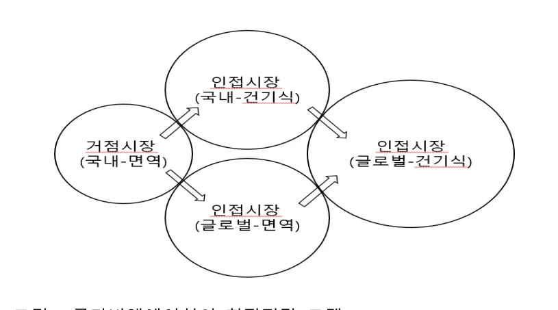
그림9. 매출액, 대비 수출액 비교(사업보고서 기반 본인 작성)
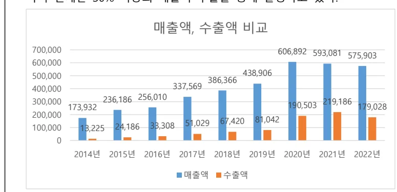
5.2.1 해외시장 진출
콜마비앤에이치는 2010년 미국을 시작으로, 2011년 일본, 캐나다, 2013년 대만, 2015년 싱가폴, 2018년 러시아, 호주, 2020년 중국 등 작성시점을 기준으로 현재 25개국에 제품을 수출하고 있다. 2013년 500만불 수출의 탑 달성을 시작으로, 2015년 1000만불 수출, 2017년 5000만불 수출, 2020년 1억불 수출, 2021년 2억불 등 점차 빠른속도로 수출량이 증가하고 있는 것을 알 수 있다. 콜마비앤에이치의 매출액 내 수출 비중은 아래와 같고, 지속적으로 증가하여 현재는 30% 이상의 매출이 수출을 통해 발생하고 있다. 콜마비앤에이치는 먼저 세계1위 시장인 미국시장에 진출하고자 하였다. 헤모힘은 이미 개발단계에서 2004년에 미국 FDA 검사를 통해 안전성을 입증 받았고 특허 등록을 마친 상태였다. 또한 미국의 경우 네트워크 마케팅의 종주국이기 때문에 애터미의 현지 법인 설립을 시작으로 대중명품(저가격, 고품질) 전략으로 회원을 모집하며 진출에 성공하였다. 헤모힘이 주력 상품이지만 ‘21년 국내에서 개별인정형 승인 받은 미숙여주추출물은 미국에서도 FDA의 NDI(New Dietary Ingredient) ‘23년 4월에 승인을 취득하여 곧 제품화할 예정이다. 반면 중국은 정치적 이유로 외국 수입제품에 대해 관세를 부과하거나 수입을 금지하는 경우가 많기에 현지 법인 및 공장 설립을 통해 진출하고자 하였다. 강소콜마를 설립하여 2000억원 CAPA의 ODM 생산기지를 만들었고, 애터미와 합작법인인 연태콜마를 설립하였다. 그리고 애터미가 2020년 직소허가를 취득하면서 중국 시장에 성공적으로 진출하게 되었으며, 2022년을 기준으로 주요 수출국 비중에서 중국이 약 50%를 차지하게 된다. 이 외에도 KMF 할랄, MUI 할랄, 호주 TGA GMP 인증 등 각국이 요구하는 인증 사항을 적절히 반영하며 국가별 맞춤형 대응을 지속적으로 개발하고 있다.
5.2.2 한국푸디팜 합병
콜마비앤에이치가 성공적으로 헤모힘 제품을 사업화하여 건강기능식품 시장에 진입하긴 하였으나, 여전히 식품 보다는 화장품의 매출 비중이 높아 식품 분야의 사업 강화 필요성을 느끼게 되었다. 모회사인 한국콜마는 화장품 전문업체였기 때문에 더 이상 도움을 줄 수 없는 상황이었고, 이에 따라 비알앤사이언스, 한국푸디팜 등을 지속적인 지분인수하며 R&D와 생산분야의 역량강화를 도모하였다. 그리고 최종적으로는 선바이오텍과 정화영 대표의 한국푸디팜(2005년 설립)의 합병을 결정한다. 정화영 대표는 노바렉스의 전신인 렉스진바이오텍 창립멤버로 약 10년동안 영업의 총괄을 책임지고, 2005년에는 한국푸디팜을 직접 창업하여 경영한 건강기능식품계의 전문가였다. 정화영 대표의 한국푸디팜은 이미 2009년 59억, 2010년 67억, 2011년 104억의 매출을 발생시키고 있었으며, 옵티마케어, LG생활건강, 종근당바이오 등에 다이어트식품 및 복합영양제를 납품하고 있었다. 콜마비앤에이치는 이 합병을 통해 OEM 생산능력 강화 및 새로운 고객채널을 확보할 수 있게 되었다. 콜마비앤에이치는 새롭게 합류한 정화영 대표 능력을 높이 사서 기존 김치봉 대표이사와 함께 정화영 대표를 공동대표로 선임하였다. 이렇게해서 기존 선바이오텍 사업부는 헤모힘과 프로바이오틱스를 주로 생산하고, 푸디팜 사업부는 기타 OEM/ODM 제품을 주로 생산하며 건기식 시장의 강자로 발돋움 할 준비를 갖추었다.
5.2.3 OEM/ODM 역량 강화
식품의약품안전처의 기능성원료 인정 및 기술단계 분석 자료에 따르면 건강기능식품에 있어서 핵심기술은 크게 탐색 기술과 소재화 기술 그리고 제품화 기술로 구분할 수 있다. 먼저 탐색기술은 시장동향과 기대수요 분석을 통한 수요예측과 유효성분 추출 정제 및 가공, 기능성분 및 물질탐색, 원료배합, 예비 기능성 테스트 등 후보소재를 도출하는 기술이라고 할 수 있다. 소재화 기술은 지표물질을 설정 및 기능성분분석법 확립, 소재 설계 등 소재를 표준화하는 기술과 일반독성시험 등 안정성 시험기술, 그리고 인체적용 및 임상설계/관리, 작용기전 규명 등 기능성확보 기술이 있다. 마지막으로 제품화 기술은 제품설계 및 제품가공, 제품공정 생산기술, 제품포장 및 규격화, 품질관리 등이 해당된다. 초기 콜마비앤에이치는 건강기능식품의 3가지 핵심기술 중에서 제품화기술에 먼저 특화되었다. 애터미를 통한 매출이 폭발적으로 확대되면서 애터미가 추구하는 저가격 고품질의 제품을 생산하기 위해 천궁, 당귀, 백작약 등을 재배단계에서부터 계약재배를 원칙으로 하였으며, 수시로 품질검사팀이 재배현장을 직접 찾아 작황을 살펴보고 농약이나 제초제 등을 사용하는지 확인을 하도록 하였다. 수확 후에도 성분 및 유해성 검사를 실시하고, 가공할 때 또 한번 품질검사를 진행하여 원료에서부터 완제품까지 모든 공정에서의 안전성 및 기능 효과 등 관리하였다. 이에 따라 콜마비앤에이치 제품의 반품률은 0.08%에 불과하게 되었다. 그리고 2012년에는 헤모힘 전용 생산공장을 세종에 준공하여 자동화 공정을 강화하였다. 약재를 추출해서 농축하는 공정은 추출탱크에 약재가 투입되면 농축액이 나올 때까지 아예 오픈이 되지 않고, 모든 추출물들은 배관을 통해서 움직이도록 하여 인력투입 최소화 및 미생물의 오염 등 위생적인 문제를 사전에 방지하였다. 이를 통해 생산설비나 공정이 최적화 됨과 동시에 부적합품, 불량품의 생산량이 현저히 낮아지게 되었다. 또한 GMP 인증을 받으면서 제조, 품질, 위생 등 전반적인 모든 관리를 매뉴얼화하여 생산 품질을 균일화하였다. 현재는 모든 공정에서 첨단 분석장비를 활용한 유해물질 관리, 미생물 실험, 함량 분석 등 과학적인 관리시스템으로 품질확보에 더욱 힘쓰고 있는 상황이다. 푸디팜과의 합병 이후 제품과 고객사를 다양화하는데 성공한 콜마비앤에이치는 제품 및 공정 설계, 생산, 품질관리 등 제품화기술을 강점으로 내세워 이마트, 유한양행, 퍼플랩스헬스케어 등 고객 다변화에 나섰다. 건강기능식품 OEM/ODM 업체 입장에서 가장 중요한 경쟁력은 고객사 요구사항에 맞춰 납기일 내에 고품질의 제품을 최대한 저렴한 원가로 생산해주는 것이라고 할 수 있다. 콜마비앤에이치는 고객 채널을 다변화하면서 다양한 식품 소재 뿐만 아니라 맞춤형 제형 개발 능력을 강화하여 경쟁력을 갖추고자 하였다. 고형제와, 액제, 연질 캡슐 등 기존 제형에 추가적으로 컬러 Multi tip형 정제 기술을 개발하여 천연 색소 및 파이토케미컬 성분이 추가된, 시간이 지나도 탈색이 일어나지 않는 복합컬러정제로 제형화하였다. 이 제형은 가공성, 흐름성, 압축성 문제가 없고 섭취 시 소화흡수가 빠르다는 장점이 있다. 그리고 구제역, 광우병 등 동물성 원료에 대한 인식이 악화되었을 때는 누구보다 빠르게 식물성 연질캡슐과 츄어블 제형을 개발하여 납품하였다. 또한 20,30대의 젊은 고객층과 성장기 어린이 제품을 위해 발포제형과 트로키 정제 기술을 개발하였다. 발포제형은 탄산수소나트륨과 구연산이 물에 용해되면서 발생되는 탄산가스로 청량감을 제공함과 동시에, 입자 코팅을 통해 포장된 상태에서는 가스가 미리 발생하지 않도록 설계하였다. 트로키 정제는 Fine powder 형태의 이소말트분말, 솔비톨분말 등 알코올당을 사용하여 제조함으로써 압축 강도가 높으면서도 음용시 부드럽게 녹도록 하여 입 속에서 천천히 빨아먹을 수 있도록 하는 정제기술도 개발하였다. 특히 코로나19 이후로 20, 30대의 건강기능식품에 대한 관심이 대폭 증가했는데 이에 따라 기존의 정제, 캡슐 등 의약품 제형보다는 젤리, 젤 등의 제형화가 반드시 필요한 상황이다 또한 콜마비앤에이치는 기술확보 및 제품화를 위해 오픈 이노베이션 추진 체계를 바탕으로 공동연구를 지속적으로 시행하였으며, 이를 통해 20개 이상의 개별인정형 신규 원료 개발 파이프라인을 갖추게 된다. 신규 물질을 자체적으로 개발하면 너무 시간이 오래 소요되기 때문에 대학, 출연연 등과 C&D과제를 통해 원료 후보군을 도출하고자 하였다. ‘21년 개별인정형을 획득한 미숙여주주정추출분말은 콜마비앤에이치가 농촌진흥청, 경상대학교, 경남과학기술대학교와 함께 협력을 통해 6년의 연구를 거쳐 개발한 천연 유래 식물성 원료이며, 2022년 유한양행을 통해 출시한 ‘유한 혈당케어 여주 S52’제품은 약 50억 매출을 기록한 것으로 알려졌다. 개별인정형 제품별 매출액이 타 제품군에 비해 높진 않지만 개별인정형 원료가 타겟으로 하는 분야는 당뇨 예방, 혈행개선, 간기능 개선, 비만 개선, 관절염 등 건강 수요가 많기 때문에 효능이 검증되기만 한다면 폭발적으로 매출을 올릴 수 있을 것으로 예상된다. 콜마비앤에이치는 현재 5개의 개별인정형 원료만을 보유하고 있으나, 자체개발 및 C&D과제를 통해 지속적으로 연구해온 어린이 키 성장, 여성 갱년기, 관절건강, 인지개선, 다이어트 등 다양한 분야에서 개별인정형 원료 확보를 앞두고 있으며 25년까지 13건 추가 획득을 목표로 하고 있다그림10. 콜마비앤에이치 원료 개발 계획(출처 : IR 리포트) .
그림10. 콜마비앤에이치 원료 개발 계획(출처 : IR 리포트)
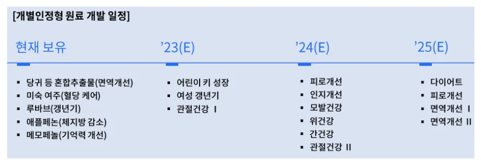
5.3 경쟁사와의 비교분석
콜마비앤에이치의 주요 경쟁사인 노바렉스는 1995년 설립 후 2003년 건강기능식품법 시행 전까지 건강기능식품 업계의 대표적인 제조업체였으며, 자체개발한 원료보다는 주요 고객사의 제품을 OEM 방식으로 생산(매출의 비중이 70% 이상을 차지)했던 업체이다. 헤모힘이라는 핵심기술을 지니고 사업을 시작한 콜마비앤에이치와 달리, 노바렉스는 설립 초기에 자체 원료개발 기술을 확보하지 못한 상황이었기 때문에 노바렉스는 생산역량에 중점을 두어 빠르게 공장 완공 및 ISO9001 인증(국제 품질경영시스템), 우수건강기능식품 GMP 적용업체 지정 등 역량을 확보하였다. 이를 통해 국내 건강기능식품 OEM 생산분야에서 입지를 굳혔으며, 이후 자체 원료개발을 시작하여 현재 무려 40건이라는 국내 최다 개별인정형 보유현황을 자랑하고 있다. 그러나 노바렉스의 매출액은 2018년이 되어서야 1,000억 돌파 및 코로나 특수로 2020년에 2,000억을 돌파하였고, 수출실적도 2022년이 되어서야 천만불 수출의 탑을 달성할 수 있었다. 또 소품종 대량생산이 가능한 콜마비앤에이치가 평균 15%에 육박하는 영업이익률을 보인 것에 비해, 다품종을 생산하는 노바렉스는 업계 평균수준인 10% ~ 12% 정도의 영업이익률을 보이면서 생산설비 증설이나 해외지사 및 공장 설립과 같은 투자에서도 뒤쳐지게 되었다. 노바렉스는 국내 건강기능식품 OEM 시장을 거점시장으로 타겟하여 진출한후 국내 ODM 및 글로벌 건강기능식품으로의 확장을 시도한 것으로 파악된다. 하지만 OEM 시장과 ODM 시장은 특성이 많이 달랐고, 노바렉스가 다양한 원료를 개발하면서 업계 최고의 R&D 역량을 인정받았다고는 하나, 시장 내에서 강력한 파급효과를 갖는 파이프라인은 구축하지 못하였기 때문에 매출액 규모와 성장속도면에서 모두 콜마비앤에이치에게 밀리기 시작하였다. 비만개선을 위한 잔티젠을 제외하면 어린이 키 성장 등 기존에 출시한 개별인정형 제품의 매출성장이 저조한 상황이다. 또한, 애터미라는 든든한 파트너와 함께 비슷한 특성을 가진 글로벌 건강기능식품 면역시장으로 진출한 콜마비앤에치와 달리, 노바렉스는 해외시장 개척을 위해 개별 고객사를 컨택하여 계약을 체결하는 방식을 취할 수 밖에 없었고 이는 수출의 더딘성장으로 나타났다. 실제로 노바렉스는 2021년 수출액의 비중이 3%에 불가하였으며, 올해 10% 초반을 차지할 것으로 예상하고 있다. 즉 노바렉스는 초기 거점시장 진출에는 성공하였으나, 인접시장 식별 과정에서 자신의 제품이나 서비스가 바로 적용될 수 있는지 여부를 제대로 파악하지 못했으며, 이는 다시 인접시장의 특성 파악 및 맞춤형 전략 개발의 실패로 이어져 콜마비앤에이치에게 업계순위를 내주게 된 것이다.
제 6장 결론 및 시사점
본 사례연구를 통해 1호 연구소기업 콜마비앤에이치는 출자 받은 기술을 바탕으로 명확하게 거점시장을 설정하여 진입하였으며, 이를 통해 그 인접시장으로 확장하는 전략을 펼친 것이 주효했다는 것을 알 수 있었다. 그간 연구소기업에 관한 연구 문헌에서는 연구소기업이 성공하기 위한 주요 요인으로 기술역량이나 기업가역량, 창업자의 의지 등 전략적 관점이 아닌 역량 관점으로 많이 분석하였다. 그러나 본 연구에서는 오히려 시장에 대한 진입전략과 확장전략이 더 주효할 수 있음을 시사하고 있다. 일반적으로 연구소기업은 강력한 기술원천을 가지고 시작하기 때문에 본인의 기술적 역량을 과신하여 전체시장과 거점시장을 혼동하는 경우가 종종 발생한다. 연구소기업은 대부분 초기기업이므로 개발하고 있는 제품을 가지고 명확하게 세그먼트된 시장에 진출을 시도하여야 하고, 자신들이 제안하는 가치와 메시지를 일관되게 전달하는 것이 중요하다고 볼 수 있다. 그리고 이후에 진출한 거점시장(Beachhead Market)을 바탕으로 연결된 인접시장(Adjacent Market)으로의 확장을 시도하는 것이 중요하다는 시사점을 본 사례연구를 통해 얻을 수 있었다. 다만 본 연구는 단일 사례를 대상으로 진행하였기에 향후 다른 연구소기업을 대상으로 추가 연구가 필요하다고 판단된다.
Reference
- 전자공시시스템, 콜마비앤에이치 사업보고서(2015~2022)
- 2021 식품 등의 생산실적 통계집 pp. 591 – 751, 식품의약품안전처
- 콜마바앤에이치 공식 홈페이지(IR 리포트 포함)
- 2023년 기능성 원료 심사 방향, 식품의약품안전평가원
- 연구소기업 설립 가이드북(2019), 연구개발특구진흥재단
- 연구개발특구진흥재단 공식 홈페이지
- Youtube channel 콜비타민(콜마비앤에이치 공식 유튜브)
- 함형욱, 고창룡 “연구소기업의 성공요인에 관한 연구: 콜마비앤에이 치 (주) 사례를 중심으로” 한국기술혁신학회 학술대회, 2015
- C.K. Prahalad and Gary Hamel, The Core Competence of the Corporation, Harvard Business Review, Product 6528, 1990.
- 이종환, 김경환 “연구기반 스핀오프 창업기업의 중견기업으로의 성장요인 연구-콜마비앤에이치㈜ 사례 중심으로”, 기업경영연구, 2019
- 최종인, 홍길표, 장승권, 배용국 “연구소 기업의 기술사업화: 한국 원자력연구원의 헤모힘을 중심으로”, 벤처창업연구, 2012
- B Aulet, “Disciplined entrepreneurship: 24 steps to a successful startup”
- 한국건강기능식품협회 공식 홈페이지(정책 정보, 산업 정보)
- Kipris(특허정보검색서비스), 특허청
- 메조미디어 2023 건강기능식품 업종 분석 리포트
- 노바렉스 공식 홈페이지(IR 리포트 포함)